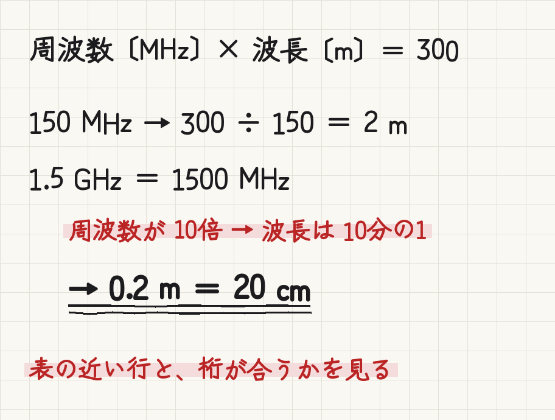

周波数と波長の対応表：kHz から GHz まで、2分の1波長・4分の1波長つき
周波数と波長は、掛けると 300 になります（周波数を MHz、波長を m で書いたとき）。1 MHz は 300 m、150 MHz は 2 m、2.4 GHz は 12.5 cm です。計算で出した波長が合っているか見当がつかずに手が止まったら、この表の近い行と比べます。
先に答え波長〔m〕＝ 300 ÷ 周波数〔MHz〕。周波数が10倍になると、波長は10分の1になります。計算の答えが、表の近い行と桁で合っていれば、大きく外れてはいません。
周波数と波長の対応表
| 周波数 | 波長 | 2分の1波長 | 4分の1波長 |
|---|---|---|---|
| 300 kHz | 1000 m | 500 m | 250 m |
| 1 MHz | 300 m | 150 m | 75 m |
| 3 MHz | 100 m | 50 m | 25 m |
| 10 MHz | 30 m | 15 m | 7.5 m |
| 30 MHz | 10 m | 5 m | 2.5 m |
| 100 MHz | 3 m | 1.5 m | 75 cm |
| 150 MHz | 2 m | 1 m | 50 cm |
| 300 MHz | 1 m | 50 cm | 25 cm |
| 430 MHz | 約 70 cm | 約 35 cm | 約 17 cm |
| 1 GHz | 30 cm | 15 cm | 7.5 cm |
| 2.4 GHz | 12.5 cm | 6.25 cm | 約 3.1 cm |
| 3 GHz | 10 cm | 5 cm | 2.5 cm |
| 5 GHz | 6 cm | 3 cm | 1.5 cm |
| 10 GHz | 3 cm | 1.5 cm | 7.5 mm |
| 30 GHz | 1 cm | 5 mm | 2.5 mm |
2分の1波長と4分の1波長は、アンテナの長さの目安に使われる長さです。
どこで止まるか
止まる段確かめ出した波長が正しい大きさか、比べる物差しを持っていないことです。
1.5 GHz の波長を 300 ÷ 1.5 ＝ 200 m としてしまい、そのまま次の計算に進む。表で GHz の行を見ると、波長は cm の大きさです。
周波数の帯の呼び名
| 呼び名 | 周波数 | 波長 | 波長での呼び名 |
|---|---|---|---|
| MF | 300 kHz 〜 3 MHz | 1000 m 〜 100 m | 中波 |
| HF | 3 MHz 〜 30 MHz | 100 m 〜 10 m | 短波 |
| VHF | 30 MHz 〜 300 MHz | 10 m 〜 1 m | 超短波 |
| UHF | 300 MHz 〜 3 GHz | 1 m 〜 10 cm | 極超短波 |
| SHF | 3 GHz 〜 30 GHz | 10 cm 〜 1 cm | センチメートル波 |
| EHF | 30 GHz 〜 300 GHz | 1 cm 〜 1 mm | ミリメートル波 |
帯の境目は、どれも 3 に10の何乗かを掛けた周波数です。周波数が10倍になるごとに、波長は10分の1になり、1つ上の帯に移ります。
表の使い方：計算の答えを、近い行と比べる
1.5 GHz の波長を出して、表で確かめます。
1.5 GHz ＝ 1500 MHz
300 ÷ 1500 ＝ 0.2 m ＝ 20 cm
表の 1 GHz（30 cm）と 2.4 GHz（12.5 cm）の間にあるので、桁は合っている
300 ÷ 1500 ＝ 0.2 m ＝ 20 cm
表の 1 GHz（30 cm）と 2.4 GHz（12.5 cm）の間にあるので、桁は合っている

数値で確かめる
145 MHz の電波に使う、4分の1波長のアンテナの長さの目安を求めます。
波長 ＝ 300 ÷ 145 ≒ 2.07 m
4分の1波長 ＝ 2.07 ÷ 4 ≒ 0.52 m
確かめ：表の 150 MHz の行（4分の1波長 50 cm）に近い
4分の1波長 ＝ 2.07 ÷ 4 ≒ 0.52 m
確かめ：表の 150 MHz の行（4分の1波長 50 cm）に近い
周波数と波長のまとめ
波長〔m〕＝ 300 ÷ 周波数〔MHz〕
周波数〔MHz〕＝ 300 ÷ 波長〔m〕
周波数が10倍 → 波長は10分の1
周波数〔MHz〕＝ 300 ÷ 波長〔m〕
周波数が10倍 → 波長は10分の1
GHz や kHz のまま 300 で割って、桁が1000倍ずれる所は、波長の計算：2.4 GHz は 12.5 cm。300 ÷ 周波数で桁がずれる所で扱っています。
別の呼び方：MF・HF・VHF・UHF・SHF・EHF は、帯の英語の呼び名の頭文字です。波長は λ（ラムダ）、周波数は f と書かれます。
確かめの1問
50 MHz の電波の波長と、4分の1波長は、それぞれ何 m ですか。
50 MHz の電波の波長と、4分の1波長は、それぞれ何 m ですか。
答え
波長は 300 ÷ 50 ＝ 6 m。4分の1波長は 6 ÷ 4 ＝ 1.5 m。紙の上で繰り返して固めたい方へ：書き込み式の問題集の案内 ／ 数を入れて確かめる：デシベルの計算の道具
最終更新：2026年11月20日